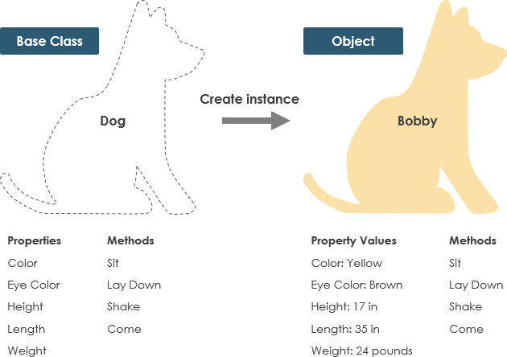
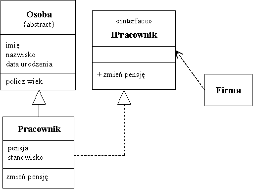

2. Informatyka Geodezyjna 2025 - wprowadzenie do programowania obiektowego (część 1)#
Python jest językiem obiektowym
Języki programowania można również podzielić na:
- Strukturalne
- Obiektowe
W programowaniu strukturalnym dzielimy funkcjonalności na moduły (podprogramy).
W programowaniu obiektowym tworzymy obiekty , każdy z nich ma własne działania (metody) oraz właściwości (atrybuty). Z założenia, mają reprezentować elementy świata rzeczywistego.
W Pythonie można pisać kod w obu z tych podejść, choć jest on nastawiony na programowanie obiektowe.

Klasy
Żeby zrozumieć istotę działania metod i ich różność od funkcji oraz atrybutów, przyjrzyjmy się czym jest obiekt.Obiekt to wszystko co napiszemy w Pythonie. To zarówno klasy jak i funkcje.
Spotkamy się z metodami przypisanymi do klas. Klasa to bardzo ważny element języków obiektowych.
Czym zatem jest klasa?
Klasa to abstrakcja pewnego obiektu. Oznacza to uogólnieniony opis pewnego elementu, który zdefiniowany jest przez taką klasę poprzez określenie jego typowych cech (atrybutów) i operacji (metod), które można na nim wykonać. Tą samą strukturą opisujemy elementy świata rzeczywistego.
Przykład obrazujący:
Pizza to abstrakcyjna klasa, którą opisujemy pewien typ dania. Ma cechy (atrybuty):
- Składniki
- Sos
Oraz metody:
- Jedz
- Polej oliwą
Instancja
To praktyczna realizacja klasy.
Kontynuując przykład obrazujący:
Piekąc pizzę nadajemy jej atrybuty - składniki (pieczarki, ser) i sos (pomidorowy). Wtedy otrzymujemy instancję klasy pizza w postaci pizzy funghi.
Pizza to abstrakcyjna klasa, którą opisujemy pewien typ dania. Ma cechy (atrybuty):
- Składniki = [pieczarki, ser]
- Sos = pomidorowy
Teraz możemy wywołać metodę na naszej instancji, która zdefiniowana już jest w klasie:
pizza_funghi.jedz()
Przepis na danie jest odpowiednikiem KLASY, czyli abstrakcyjnego pojęcie określającego cechy i metody danego obiektu.
Upieczona pizza hawajska (albo inna) jest odpowiednikiem INSTANCJI KLASY, czyli praktycznej realizacji klasy - nie jest abstrakcyjna, posiada cechy (atrybuty). Jest to też obiekt.
Proces tworzenia obiektu z klasy nazywa się INSTANCJONOWANIEM.
Poniżej drugi przykład z abstrakcyjnym pojęciem PSA:
Abstrakcyjna klasa PIES - ma atrybuty:
Kolor
Kolor oczu
Wysokość
Długość
Waga
I metody:
Usiądź
Połóż się
Machaj ogonem
Przyjść
A Bobby jest praktyczną realizacją, ma te same metody i ma nadane chechy.
Klasy mogą dziedziczyć cechy (jeden z paradygmatów). Tu wyróżniamy klasy nadrzędne i klasy podrzędne . Poniżej przykład:
Powyżej widzimy diagram klas UML (zaznajomicie się z nim za chwilę)
Klasa nadrzędna - Osoba, posiada atrybuty - imię, nazwisko, data urodzenia oraz metodę policz wiek
Klasa dziedzicząca (podrzędna) - Pracownik, posiada atrybuty pensja, stanowisko oraz wszystkie metody klasy nadrzędnej (imię, nazwisko, data urodzenia) oraz metody zmień pensję i policz wiek.
Klasa IPracownik jest interfejsem - jeszcze jednym elementem realizującym paradygmat programowania obiektowego - hermetyzacji/enkapsulacji - stanowi interfejs operujący na cechach pracownika, czyli jest pośrednikiem dokonującym zmiany w instancjach klasy Pracownik. Interfejs ma za zadanie kontrolować zmiany i ograniczać pożądane ingerencję w cechy instancji klas.
Klasy pozwalają na realizację wszystkich czterech paradygmatów programowania obiektowego. Diagram klas UML jak powyżej może zostać przeniesiony i zaimplementowany w Pythonie.
Diagram klas#
Wykorzystajmy powyższy diagram klas by zrozumieć czym są klasy i jakie są między nimi zależności
1. Czym jest UML?#
UML (Unified Modeling Language) to język graficzny używany do modelowania systemów informatycznych. Diagramy UML pomagają wizualizować strukturę i zachowanie systemów, a jednym z najczęściej stosowanych jest diagram klas.
2. Diagram Klas UML#
Diagram klas przedstawia strukturę systemu poprzez wizualizację klas, ich atrybutów, metod oraz relacji między nimi.
2.1. Podstawowy diagram klasy#
Każda klasa jest reprezentowana jako prostokąt podzielony na trzy sekcje:
Pierwsza sekcja zawiera nazwę klasy.
Druga sekcja zawiera atrybuty klasy (cechy/zmienne).
Trzecia sekcja zawiera metody klasy (operacje).
2.2. Modyfikatory dostępu#
Każdy atrybut i metoda może mieć modyfikator dostępu:
+(public) – dostępne wszędzie.-(private) – dostępne tylko wewnątrz klasy.#(protected) – dostępne w klasie i jej podklasach.
3. Relacje między klasami#
Diagram UML dla klas może przedstawiać różne typy relacji między obiektami:
3.1. Dziedziczenie (Generalizacja)#
Reprezentuje hierarchię klas – klasa podrzędna dziedziczy cechy i metody klasy nadrzędnej.
Symbol: Pusty trójkąt skierowany w stronę klasy nadrzędnej. ▲
3.2. Asocjacja#
Reprezentuje związek między dwiema klasami. Może być jednostronna lub dwustronna.
3.3. Agregacja (Słaba zależność)#
Obiekt jednej klasy może istnieć niezależnie od drugiej klasy. Symbol: Pusty romb.
3.4. Kompozycja (Silna zależność)#
Obiekt klasy zawieranej nie może istnieć bez klasy nadrzędnej. Symbol: Wypełniony romb.
Podsumowanie#
Diagramy UML dla klas reprezentują obiektowy sposób modelowania struktury systemów. Te struktury, przedstawione w UML mogą być zaimplementowane z powodzeniem w języku obiektowym, takim jak Python .
Najważniejsze elementy diagramów UML:
Klasy z atrybutami i metodami.
Relacje: dziedziczenie, asocjacja, agregacja, kompozycja.
Modyfikatory dostępu regulujące dostęp do danych.
Dzięki UML programiści i analitycy mogą lepiej planować i komunikować strukturę systemu przed jego implementacją.